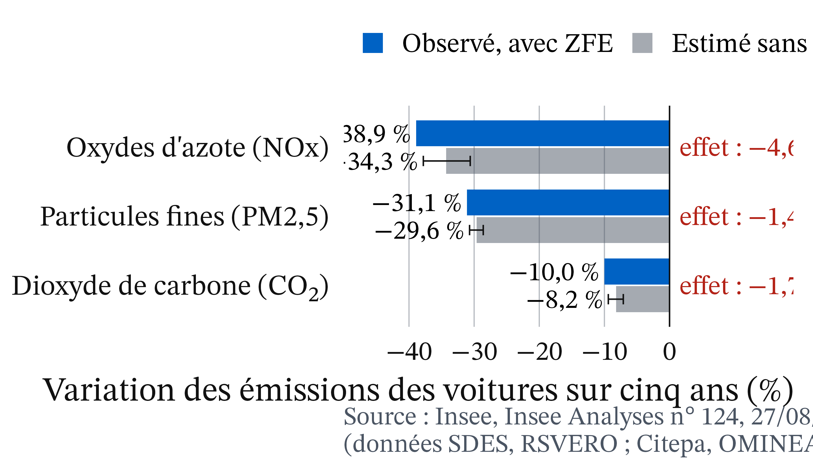
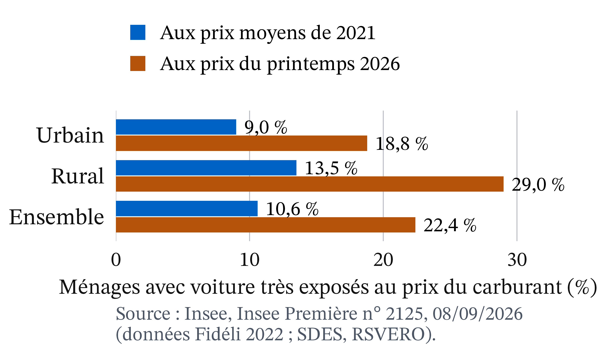

Le 8 octobre 2026, l’Assemblée n’a pas voté la suppression des ZFE
Débat arrêté à minuit, sans vote (LCP, 09/10/2026)
21 mai 2026 : article censuré pour vice de procédure (décision n° 2026-903 DC)
25 agglomérations de l’Hexagone avaient une ZFE au 1er janvier 2025 (The Conversation, 11/06/2026)
Une ZFE interdit les voitures les plus anciennes, repérées par leur vignette
Entrée de la ZFE de Lyon, février 2025. Photo : Sebleouf, CC BY-SA 4.0, Wikimedia Commons.
Trois faits intriguent
Tous admettent que la pollution nuit à la santé, mais la mesure divise.
Les ZFE font baisser les émissions, mais bien moins que la baisse totale (Insee, 27/08/2026).
Les ménages modestes, qui polluent peu, changent souvent de voiture.
Qui doit payer la transition automobile : le pollueur, le contribuable ou le riverain ?
Trois outils :
le coût marginal social
taxe, norme ou subvention
l’effet propre d’une politique
Rappel : une externalité, c’est un coût que personne ne paie
Externalité : l’action d’un agent modifie le bien-être d’un autre sans compensation.
Cm : coût d’une unité de plus ; D : bénéfice marginal.
Perte sèche : surplus perdu quand on s’écarte de la meilleure quantité.
Le marché oublie la pollution : Pigou propose une taxe égale au dommage
Vers 1920 · John Palmer Clarke, domaine public, Wikimedia Commons
Arthur Cecil Pigou (1920), The Economics of Welfare · école néoclassique. Le coût privé est inférieur au coût social, et le marché produit trop. Une taxe égale au dommage de la dernière unité rapproche les deux.
Le coût pour la société dépasse le coût privé : Cms = Cm + Dm
Définition 1 (Dommage marginal)Dm : coût que la dernière unité impose aux autres, sans compensation.
Définition 2 (Coût marginal social)Cms = Cm + Dm.
Le marché s’arrête en Q*, la société voudrait s’arrêter en Q°
Définition 3 (Optimum social)Q° : D égale Cms. Le marché s’arrête en Q*, où D égale Cm. Avec une externalité négative, Q* > Q° : on roule trop.
Entre Q° et Q*, chaque trajet coûte plus qu’il ne rapporte : c’est la perte sèche
Figure 1
Graphique théorique.
Exemple chiffré : un trajet vaut 12 − Q, coûte 4 € et pollue pour 2 €
Agglomération fictive. Q en milliers de trajets par jour, P en euros.
Valeur d’un trajet : P = 12 − Q
Cm = 4 € ; Dm = 2 €
Marché : Q* = 8 000 trajets. Optimum : Q° = 6 000
Marché : 12 − Q = 4, donc Q* = 8
Cms = 4 + 2 = 6 €
Optimum : 12 − Q = 6, donc Q° = 6
2 000 trajets de trop.
Les 2 000 trajets de trop font perdre 2 000 € par jour
Le 6 001e trajet vaut 6 € et coûte 6 € : il ne perd rien.
Le 8 000e vaut 4 € et coûte 6 € : il perd 2 €.
Perte sèche = ½ × 2 × 2 = 2 000 € par jour
Pause
Reprise dans 15 minutes.
Une taxe de 2 € ramène les conducteurs à 6 000 trajets
Les 12 000 € de taxe ne sont pas perdus : ils passent à l’État
« La taxe coûte plus cher aux conducteurs, donc à la société. » C’est faux : la recette est un transfert, que l’État peut rendre.
Une norme mal ciblée peut faire plus de mal que de bien
Bien ciblée (les trajets à 4–6 €) : +2 000 €
Une ZFE interdit des vignettes, pas les trajets les moins utiles.
Si elle écarte 2 000 trajets à 10 € : 4 000 − 12 000 = −8 000 €
Même objectif, quatre payeurs différents
Instrument
Qui paie ?
Taxe t = 2 €
les conducteurs : 12 000 € + 2 000 €
Norme bien ciblée
les conducteurs écartés : 2 000 €
Subvention
les contribuables : 4 000 €
Rien
les riverains : 16 000 €
Chiffres fictifs, montants par jour.
Choisir un instrument, c’est choisir qui détient le droit
2003 · University of Chicago Law School, licence Attribution, Wikimedia Commons
Ronald Coase (1960), « The Problem of Social Cost » · école de Chicago. Le dommage est réciproque. Si les droits sont clairs et la négociation peu coûteuse, les parties trouvent la bonne quantité ; le droit décide de qui paie.
Fixer le prix ou la quantité : tout dépend de l’erreur la plus grave
2015 · European University Institute, CC BY-SA 2.0, Wikimedia Commons
Martin Weitzman (1974), « Prices vs. Quantities » · économie publique. Quantité si le dommage grimpe vite au-delà d’un seuil ; prix si le dommage de chaque unité est à peu près le même.
Avec une demande incertaine, la taxe fixe le prix et la norme fixe la quantité
Figure 3
Chiffres fictifs.
Si le dommage est constant, la taxe tombe juste ; s’il grimpe, la norme l’emporte
Dm = 2 € toujours : la norme se trompe de 1 000 trajets, soit 500 € de perte par jour.
Dommage qui grimpe au-delà de 6 000 : la norme garantit 6 000.
Pour le NO₂, le droit européen fixe un plafond : c’est l’argument de Weitzman
Valeurs limites de concentration ; la France condamnée pour des dépassements « de manière systématique et persistante » (The Conversation, 11/06/2026)
Pour le CO₂, un prix se défend : le dommage d’une tonne de plus est à peu près constant.
Pour juger une politique, il faut comparer avec ce qui se serait passé sans elle
Définition 4 (Contrefactuel et effet propre) Le contrefactuel est ce qui se serait passé sans la politique. L’effet propre est l’écart entre l’observé et ce contrefactuel.
Pour les oxydes d’azote, la ZFE explique 4,6 points sur une baisse de 38,9 %

Figure 4
Source : Insee, Insee Analyses n° 124, 27/08/2026.
L’essentiel du verdissement du parc se serait produit sans ZFE
Figure 5
Source : Insee, Insee Analyses n° 124, 27/08/2026.
« La ZFE a fait baisser les émissions de 38,9 % » est faux, et « elle ne sert à rien » aussi
Elles auraient baissé de 34,3 % sans ZFE. L’effet est petit, mais mesuré et différent de zéro. Un avant-après ne suffit jamais : il faut un contrefactuel.
La norme vise la vignette, pas le kilomètre
Les voitures des résidents ne roulent pas significativement moins.
Les Crit’Air 5 et non classées pesaient environ 6 % du parc des ZFE (223 400 sur 3,6 millions).
Environ 12 600 contraventions liées aux ZFE en 2019, 2 300 en 2024 (Insee, 27/08/2026)
Les ménages modestes changent de voiture, alors qu’ils polluent peu au total
Effet plus marqué dans les communes à revenu intermédiaire ou modeste (Insee, 27/08/2026)
Île-de-France : les 20 % les plus pauvres, 9 % de la pollution automobile (Poulhès, 23/06/2025)
Une taxe sur le carburant frapperait d’abord les ménages ruraux

Figure 6
Source : Insee, Insee Première n° 2125, 08/09/2026.
Le coût tombe sur les propriétaires de vieilles voitures, le bénéfice sur les habitants de la zone
Étape
Qui est concerné
1. La règle
Propriétaires de voitures anciennes
2. La réaction
Ménages modestes et intermédiaires
3. Le parc
Territoires voisins sans restriction
4. L’air
Habitants de la zone
Le Conseil constitutionnel a censuré la suppression des ZFE sans se prononcer sur le fond
Décision n° 2026-903 DC du 21 mai 2026 : censure pour une raison de procédure (article 45 de la Constitution), l’article supprimant les ZFE ayant été ajouté à la loi sans lien avec son contenu initial. Au 21/10/2026, les ZFE restent en vigueur.
Ce que l’analyse établit, et ce qui relève d’un jugement
Positif : la pollution est une externalité ; l’effet propre des ZFE est modeste.
Normatif : qui détient le droit ? efficacité ou équité ? quel poids à la santé ?
Ce qu’il faut retenir
Cms = Cm + Dm : le marché produit trop.
Une taxe égale à Dm mène à Q° ; sa recette est un transfert.
Taxe, norme, subvention : même quantité, payeurs différents.
Dommage qui grimpe : norme ; dommage constant : prix.

 Vers 1920 · John Palmer Clarke, domaine public, Wikimedia Commons
Vers 1920 · John Palmer Clarke, domaine public, Wikimedia Commons
 2003 · University of Chicago Law School, licence Attribution, Wikimedia Commons
2003 · University of Chicago Law School, licence Attribution, Wikimedia Commons 2015 · European University Institute, CC BY-SA 2.0, Wikimedia Commons
2015 · European University Institute, CC BY-SA 2.0, Wikimedia Commons